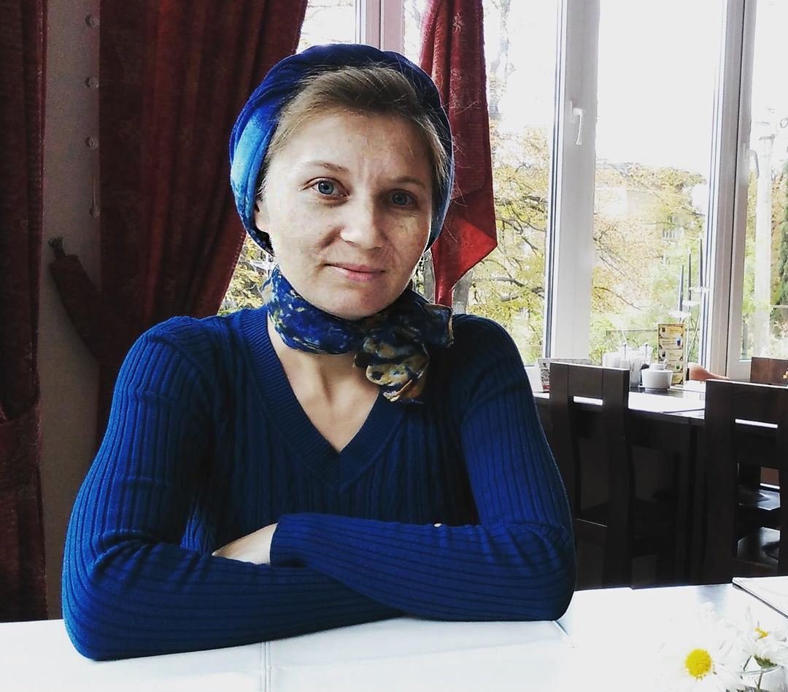
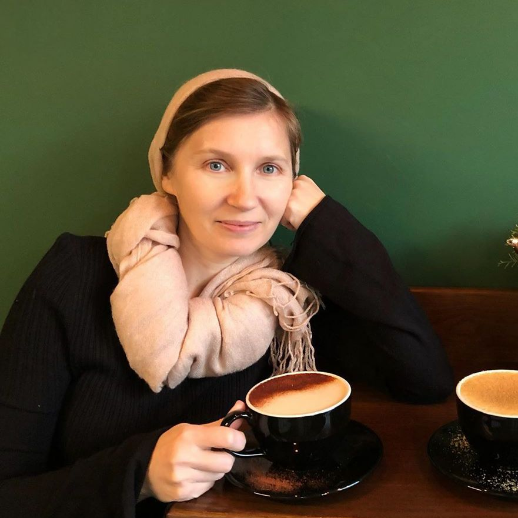
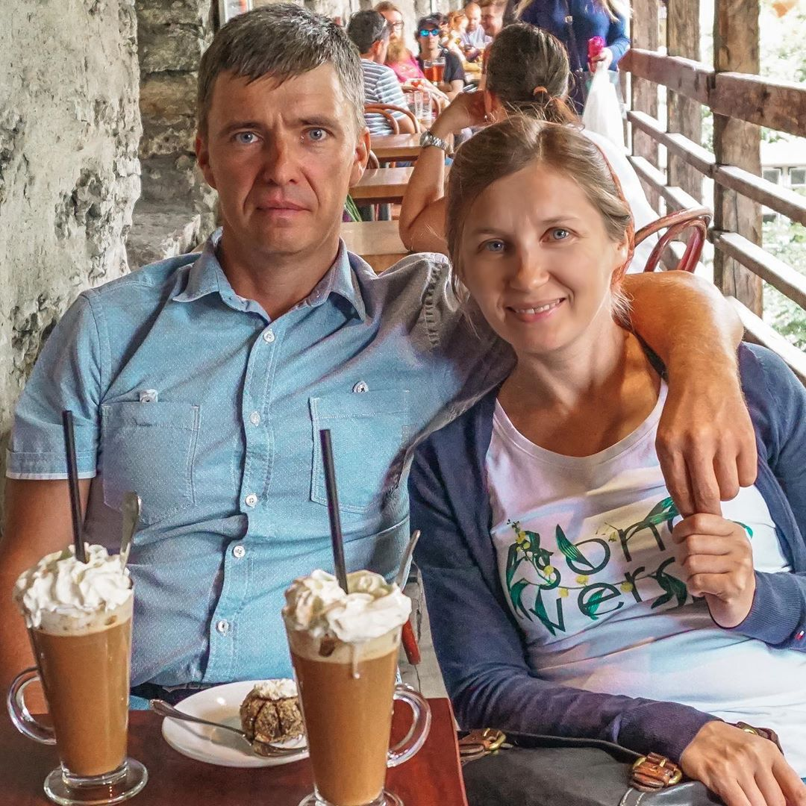

A személyim szerint 47 vagyok, a tükör szerint 30. Fiatalságom titka
Az utóbbi néhány hónapban a gyakran bombáztak személyes üzenetekkel azzal a kérdéssel, sőt , kérésekkel, hogy bizonyítsam be, hogy valóban 47 éves vagyok. Elegem lett abból, hogy ezt bizonygatnom kell, ezért ma szeretném lezárni ezt a témát és egyúttal elmondani, hogyan nézhet ki bárki közületek kicsivel 30 felettinek, még unokákkal a karjaitokon is.
Az első fotón 42 vagyok, a másodikon 47!
Egy hónap alatt megöregedtem
Nem volt könnyű a házasságom. A férjem elég sajátos jellemű ember, 34 évesen megszületett az első gyerekünk, aztán a második és harmadik, majd mély depresszió, amit “fotelpszichológusok” módszerével kezeltem, vagyis alkohollal. Szerencsére nem lett belőlem alkoholista, de nem is szépültem meg tőle.
Az anyaság nagyon nehezen ment nekem. Egy másodpercre sem engedhettem meg magamnak, hogy ellazuljak. Amikor a gyerekek ébren voltak, a legkülönfélébb módszereket kerestem, hogy hasznosan töltsem a szabadidőmet: egyik kezemmel Peppa malacot formáztam abból, ami épp kéznél volt, a másikkal kevertem a paprikás krumplit. Egyik sem sikerült túl jól.
Biztos voltam benne, hogy semmit sem csinálok elég jól: keveset foglalkozom a gyerekekkel, ritkán alkotok remekművet, nem tartok mindent tökéletesen tisztán, nem elégítem ki a férjemet, mint nő. A férjem soha nem volt elégedett, a gyerekek rosszul viselkedtek, én pedig napi három órát aludtam és őszintén utáltam magamat.
Nem volt miért szeretnem magam
Az a fiatal vonzó szépség, aki voltam a házasság utáni 10 évben, a szülési szabadság alatt egy undorító hernyóvá változott sötét foltokkal a szeme alatt és az állra csúszó „mosollyal”.
Igyekeztem nem tükörbe nézni, valósággal undorodtam saját magamtól. A túlsúlyon kívül ráncok jelentek meg a szemeim környékén, a homlokomon, sőt basszus, még az ajkaimnál is!
Szó sem volt arról, hogy magammal is foglalkozzak, hogy legalább kozmetikushoz elmenjek. A férjem eltartotta a családot, elmehettem volna dolgozni, mert szerinte így is úgy éltem, mint a kiskirály. Szépségszalonról álmodni sem mertem, mivel drága, úgy sem használ érdemben semmit, “neked így is jó lesz”, ahogy a férjem szokta mondani.
45 évesen úgy néztem ki, mint egy 75 éves és teljes szívvel gyűlöltem magam
Válás
Egyik nap a férjem hazaesett és az ajtóban bejelentette: „Másvalakim van, úgyhogy elhagylak, a lakást meghagyom nektek a lányoddal”. Összeszedte a holmiját és elment, a válást később intéztük.
Nem volt senki, aki helyes gondolatokat ültetett volna belém: hadd menjen csak ez az öntelt barom, amerre lát, aki téged boldogtalanná tett, elvette az önbizalmadat és kisemmizett! Napokon keresztül csak arra gondoltam, hogy mindenről én tehetek és olyannyira magamat okoltam a történtekért, hogy nagyon lefogytam és ezzel együtt megöregedtem.
A barátnőm hozott engem vissza az élethez
Az egyetlen olyan ember, aki engem támogatott, gyerekkori barátom, Marika volt. Már rég nem is egy országban élünk, néha beszélünk Skype-on és alig találkozunk.
Nem felejtem el azt a napot, amikor előzetes egyeztetés nélkül eljött hozzám vendégségbe egy csokor virággal és egy üveg borral. Oda voltam a boldogságtól, külön szabadságot vett ki és minden megtakarított pénzét arra szánta, hogy eljöjjön hozzám pár napra és kihúzzon engem a pácból, amibe már majdnem belefulladtam.
Fiatal korunkban Marikával jártuk a világot és boldogok voltunk
Egész éjjel beszélgettünk, alig aludtunk. Reggel úgy néztem ki, mint egy meztelen csiga: duzzadt, undorító és a hajam koronaként össze volt kócolva. Marika ragyogott, akár egy drágakő: smink és beállított frizura nélkül legalább úgy nézett ki, mint én 10 évvel azelőtt, amikor utoljára találkoztunk.
“Hogy csinálod, hogy ilyen frissen nézel ki?” – tettem fel a költői kérdést, Marika azonban válaszolt rá: “Nos, éppen ezért jöttem hozzád. Mindjárt elmesélem”.
Elővett a táskájából egy kis tubust és odaadta nekem, előbb azonban meg kellett fogadnom, hogy legalább naponta kétszer be fogom kenni vele az arcom. Elnevettem magam: “Mi ez, fiatalító csodaszer? Nem válok békává, amíg alszom?”. Ezen jót nevettünk, hogy ezt már fokozni sem lehetett volna, majd elmentünk teázni.
A tea mellett Marika komolyabbra fordítva a szót elmondta, mi is ez a csodaszer és hogyan menthet meg engem. Szavai még mindig a fülemben csengenek:
“Nem a férjednek kell szépnek lenned, nem is mások miatt, hanem önmagadnak. Nézz tükörbe és mosolyogj. Megértem, hogy ez most nehéz, de ha szófogadó kislány leszel és használni fogod ezt a szert, ahogy ígérted, minden megváltozik majd. A ráncok kisimulnak, felfrissül az arcod. Újra beleszeretsz önmagadba. A többi jön magától”.
Korábban nem is álmodtam arról, hogy ilyen gyönyörűen nézzek ki!
Aztán elmesélte, hogy működik ez a készímény, a szokatlan összetételéről egy arany bajusz kivonatával, és hatását amit lehetett látni a Marián: egykorúák vagyunk, de 20 évvel fiatalabbnak tűnik, mint én!
Nem tudtam, hogy az arany bajusz meghúzza az arc oválisát, és helyreállítja a lógóan lévő arcok rugalmasságát. A camellia sinensis, a boszorkánymogyoró és a borostyánlevél-kivonatok elősegítik a kollagén előállítását a bőr alatt, ezáltal simítva a ráncokat.
Mindezeket a „varázslatos” összetevőket tartalmazza az , az a bizonyos szer, amelyet Marika hozott. Én meg csak ámultam és bámultam. Már csak ki kellett próbálni, hogyan működik rajtam.
Átváltozás
Marika elutazott, és azóta minden nap felhív, hogy ellenőrizze: használom-e az -et vagy sem. Követtem a barátnőm szavait, de nem vártam tőle sokat. Mégis megtörtént a csoda.
 Így néz ki a szer, amely megváltoztatta az egész életemet
Így néz ki a szer, amely megváltoztatta az egész életemet
Az egy hetes használata után a szemem alatti foltok és ráncok jelentősen halványultak. Felcsillant a szemem, visszatért a remény: mi van, ha mégis segít?
A harmadik héten „spániel szerű arcom” már nem emlékeztetett egy kutyáéra, feszesebbé vált, az arcom kivirult, felfrissült.
A házi fiatalító kúra végére nagyon megváltoztam. A ráncok a homlokomon már alig voltak láthatók, ha nem ráncoltam össze, már egyáltalán nem is látszódtak. Az arcom feszesebbé vált, a szemem ragyogott a boldogságtól.
Nem hittem el, hogy ez a fiatal szimpatikus nő a tükörben én vagyok! Ugyanaz az ember, aki fél évvel ezelőtt még undorodva nézett vissza, most játékos mosollyal az arcán néz rám a tükörből, mint aki tudja: az élet csak most kezdődik!
Így nézek ki most
Teljes győzelem az életkor felett
A külsőm átalakulása azt eredményezte, hogy elindult egy pozitív változás. Többet hallgattam magamra és elküldtem mindenkit, aki tanácsokat osztogatva beleavatkozott az én személyes életembe.
Az i-re a pontot a férjem látogatása tette fel: mikor meglátott, nem győzött csodálkozni, milyen ragyogó szépség lettem. Nem is jutott szóhoz, csak ennyit kérdezett: “Szeretőd van?”, mire én játékos mosollyal annyit mondtam: “Még nincs, de hamarosan lesz!”.
A férfiak megfordultak utánam, fiatal rajongóim és tekintélyes kérőim lettek, akik éjszakákon át kértek, hogy menjek el velük randizni. Basszus, főiskola óta nem volt ilyenben részem!
Javult az önértékelésem, és ezzel együtt az egész életem jó irányba fordult. Az udvarlók tömegéből kiválasztottam a világ legjobb férfijét, akivel néhány hónappal ezelőtt fényűző lakodalmat csaptunk.
Szóval hány éves is vagyok valójában?
Kedves nők, tényleg 47 vagyok. Nem nézek ki annyinak, köszönhetően a csodálatos szernek, szerető férfinek és annak, hogy képes voltam elhinni: minden lehetséges, csak akarni kell.
Jó irányba akartam változni, és az univerzum segített nekem ebben. Ha nekem sikerült, higgyétek el, ugyanezt ti is megtehetitek. Elég csak akarni.
Miután megszerettem önmagam, rátaláltam életem férfijára
Kezdjetek el cselekedni most rögtön. Hagyjátok el a férjeteket, akit már nem szerettek, az utált munkát – tegyétek magatokat boldoggá, kerüljön bármibe is. Ha a boldogsághoz, mint ahogy nekem is, a fiatalítással kell kezdeni, akkor íme a“varázsütés” és a link, ahol megrendelhetitek az -et. -ig a weboldalon 50%-os akció van érvényben. Éljetek az eséllyel és változtassátok meg az életeteket pozitív irányba!